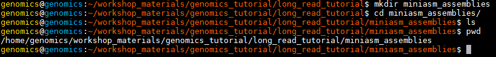

The latest third-generation sequencing platforms from Oxford Nanopore and Pacific Biosciences enable sequencing of single DNA molecules. Remember second generation sequencing platforms (e.g. Illumina) rely on sequencing a group of ~1000 mono-clonal molecules formed via PCR-like reactions. This has advantages in terms of reducing the quantity of DNA input required to enable sequencing, usually enables lower per-base costs, but has many shortcomings.
In the case of Illumina, although the sequencer is capable of generating large quantities of data (terabases in the case of a HiSeq run), the amplification step introduces GC-biases and also places a maximum limit on the size of the fragments which can be sequenced since the amplification becomes inefficient at larger fragments sizes and sequencing becomes de-phased within individual mono-clonal clusters due to polymerase errors. In the case of genome assembly, this introduces fragmentation of the assembly in areas of low coverage or repetitive regions which cannot be spanned.
Third generation sequencing of single molecules has the following features:
You can watch a video outlining PacBio sequencing at http://sequencing.exeter.ac.uk/pacific- biosciences-overview/.
Pacific Biosciences have two sequencing platforms - RSII and Sequel. The RSII is an older platform capable of generating around 750Mbases of data in 4-6 hours. The Sequel platform is the latest platform and in theory can generate up to 7G bases of data in a similar time frame. However the chemistry is still being refined and at present 4-5 Gbases is the maximum which should be expected.
The Sequel platform is PacBio’s focus for development at the moment, with optics included on the chip rather than the instrument, PacBio aims to increase the number of Zero Mode Waveguides (ZMWs) to increase throughput without significant instrument modifications.
PacBio SMRTcells (RSII left - Sequel right)
PacBio Yield and read length distributions (RSII left - Sequel right)
A typical genomic library preparation workflow is similar to that of Illumina sequencing with the difference that much higher molecular weight DNA is used and dumb-bell shaped adaptors are attached:
An important note regarding PacBio data quality
PacBio libraries are circular. Because of this, a single polymerase can sequence the same piece of DNA several times. However, a balance exists between the DNA template length, polymerase life time (also known as polymerase read length) and read quality with PacBio data. The figure below illustrates this.
A polymerase which is able to read for 10kb, could read a single 10kb template or, for example, it could read a 2kb template 5 times. The 2kb fragment, having been read 5 times, would be of much higher quality than the 10kb fragment.
Terminology which is important to understand with PacBio data is highlighted in above. A polymerase read refers to the complete set of basecalls associated with the polymerase sequencing the forward strand, adaptor, and reverse strand. Internally, we remove the adaptor sequences and provide the subreads (just the forward and reverse sequences of the template). These can be further analysed to produce circular consensus reads (CCS) if the enzyme has made more than 1 pass of the molecule.
Most assembly programs require the subreads if utilizing PacBio data.
MinION sequencing technology:
This is a radically new sequencing technology based upon monitoring electrical current fluctuations associated with the translocation of single DNA molecules through nanopores embedded in a membrane. You can read more about the technology in detail https://nanoporetech.com/how-it-works
This is a remarkable technology which has the potential to supplant short-read sequencing, if the error rates can be brought down sufficiently. It has the advantage of being portable and of generating long fragment lengths.
A typical long read assembly pipeline:
We have provided you with data generated from the same strain of E.coli K12 MG1655 across three different platforms - Oxford Nanopore MinION, PacBio RSII and PacBio Sequel. The MinION data was generated and published by Nick Loman and Josh Quick whilst the PacBio data was generated at Exeter from the same material.
We have provided you with data from both 1D and 2D libraries. Remember these are two different types of library preparation. A 1D library enables just the template strand of the DNA molecule to be read, whilst a 2D library enables both the template and complement strand to be sequenced. This means that a 2D library will be sequenced. (Recently 1D squared has replaced the 2D libraries)
The datasets can be found in the directory:
~/genomics_tutorial/long_read_tutorial/raw_data
Note that we have four datasets in total - Sequel, RSII, MinION 1D and MinION 2D the MinIon dataset consists of two fasta files. One is a 1D dataset and another is a 2D dataset. Note that typically MinION datasets are generated in a binary formatted file on a per-read basis which contain the current-levels and other data. However, for simplicity we have converted these into fasta files.
We’ll follow a similar analysis protocol for all 4 datasets (some are pre-generated).
Task 1 Generate basic statistics for each of these datasets
You can use the fasta_summary.pl script to do this for both fasta-formatted MinION datasets. It might take a while to compute, therefore we have pre-computed the results for you:
fasta_summary.pl -i E_coli_K12_1D_R9.2.pass.fasta -o E_coli_K12_1D_summary -t read
fasta_summary.pl -i E_coli_K12_2D_R9.0.pass.fasta -o E_coli_K12_2D_summary -t read
~/workshop_materials/genomics_tutorial/long_read_tutorial/pre_computed_results/canu_assemblies/fasta_summaries
For the PacBio data you can use the fastqc program as per the Illumina datasets you have looked at previously.
The fasta_summary.pl script will generate several output files:
Task 2: Compare the datasets
Note that unlike Illumina sequencers, the read lengths produced by these platforms are highly variable. The MinION datasets for example vary between 100bp and 140,000bp.
Note the relatively poor quality scores in the fastqc report for the PacBio sequences. These reflect the 10-12% raw single-pass per-base error rate of the polymerase. Similar error rates are observed in the MinION datasets. Note that unlike Illumina datasets, this error rate does not appreciably increase over the length of the read (although at very short or very long read lengths there are far fewer reads present which increase the variance estimates).
Task 3: Evaluate the likelihood of obtaining a successful assembly using Minimap/Miniasm
This very useful assembler tries to assemble long-reads without trying to correct the reads. Although you would not want to use such an assembly without further correction, it provides a useful yardstick to determine whether a more computationally intensive assembly is likely to yield good results. You can read more here https://github.com/lh3/miniasm.
Because of limitations on the memory available to us, we’ll need to subset the data first, selecting a random 100,000 reads to use (note that this is not the best approach since we should really pick the longest 100,000 reads).
The syntax can be a bit confusing, so here is an example using the RSII dataset to get you started. Each assembly should take about 5-10 mins.
Create a new working directory in ~/workshop_materials/genomics_tutorial/long_read_tutorial called miniasm_assemblies
cd ~/workshop_materials/long_read_tutorial
mkdir miniasm_assemblies

We’ll use the seqtk package from the same author as samtools to randomly select 100,000 reads from the raw dataset:
seqtk sample ~/workshop_materials/genomics_tutorial/long_read_tutorial/raw_data/RSII_Ecoli_K12_subreads.fastq 100000 > RSII_Ecoli_K12_subreads.subsampled.fastq
Now we can ask minimap to calculate all the overlaps between those 100,000 reads and output the results in a compressed gzip file. Note that you will have to put the input reads (RSII_Ecoli_K12_subreads.subsampled.fastq) in twice - since we are asking minimap to calculate the overlaps between all reads in the dataset:
minimap -Sw5 -L100 -m0 -t 2 RSII_Ecoli_K12_subreads.subsampled.fastq RSII_Ecoli_K12_subreads.subsampled.fastq | gzip -1 > overlaps_RSII.paf.gz
Once complete, we can ask miniasm to create an assembly graph and find an assembly path through it:
miniasm -f RSII_Ecoli_K12_subreads.fastq overlaps_RSII.paf.gz > overlaps_RSII.gfa
awk '/^S/{print "\>"\$2"\\n"\$3}' overlaps_RSII.gfa | fold > miniasm.PacBio_RSII.contigs.fasta
Repeat this for the Sequel and MinION datasets and then use the QUAST package (quast.py) to compare the assemblies against the reference genome. You should use the same E.coli reference as you used for the Illumina assemblies.
You should be able to open the report.html file in firefox or other web-browser to compare the assemblies. It should look somewhat similar to:
Note that your results will differ since you will have a different subset of reads. Minimap/miniasm does not correct reads prior to assembly. This means that the alignments to the reference are likely to be error prone. Note that even without this correction, the assembler is able to reconstruct the genome in (more or less) a single contig of 4.7Mb with just 100,000 reads! This bodes well for a more computationally intensive assembly which first corrects reads and highlights the power of long reads for de-novo assembly.
If you wish you can subset the data with the seqtk sample and compare how the datasets assemble at different levels of coverage.
Task 4: Generate a corrected assembly with Canu (results pre-computed)
Canu is derived from the original Celera assembler used to assemble the human genome from Sanger data. It has been optimized for long-read PacBio and Nanopore data. You can read more at http://canu.readthedocs.io/en/stable/tutorial.html. A number of long read assemblers are available (including Nanopore-specific assemblers - a good review paper on this is:
Chu J, Mohamadi H, Warren RL, Yang C, Bi-Rol I. Innovations and challenges in detecting long read overlaps: an evaluation of the state-of- the-art. Bioinformatics. 2016
For now we will just use Canu as it is relatively straightforward to use. Here is an example command to assemble the RSII E.coli data. We have pre-computed the results for you for the MinION 2D, RSII and Sequel data.
~/workshop_materials/genomics_tutorial/long_read_tutorial/pre_computed_results/canu_assemblies
To save time, and provide a fairer comparison between platforms we will not use the MinION 1D data.
canu -p canu_RSII -d canu_RSII genomeSize=4.7m useGrid=False -pacbio-raw RSII_Ecoli_K12_subreads.fastq
Note that Canu will:
Task 5: Polish Canu assemblies with Illumina data using Pilon (results pre-computed)
Oxford Nanopore and MinION data suffer a tendency to introduce insertions or deletions into a sequence (even after read correction). This means that to obtain the highest per-base quality it is desirable to polish assemblies by aligning short reads using BWA and then using a tool such as Pilon (https://github.com/broadinstitute/pilon/wiki) to polish the assemblies.
We have supplied you with pre-computed results. We’ll use just the RSII data to illustrate an example set of commands. First let’s align the Illumina reads from the short-read section of the workshop using BWA.
We need to create a reference for the PacBio RSII contigs:
bwa index RSII_canu_contigs.fasta
Now we need to align the Illumina reads against the contigs:
bwa mem -x pacbio -t 2 RSII_canu_contigs.fasta ../../../data/sequencing/ecoli_exeter/E_Coli_CGATGT_L001_R1_001.fastq ../.
./../data/sequencing/ecoli_exeter/E_Coli_CGATGT_L001_R2_001.fastq | samtools sort -@ 2 -O
bam -o RSII_canu_contigs_illumina_aligned.bam
samtools index RSII_canu_contigs_illumina_aligned.bam
Now that we have aligned the Illumina data against the contigs we can run Pilon to correct the contigs where they differ from the Illumina reads.
pilon --genome RSII_canu_contigs.fasta --frags RSII_canu_contigs_illumina_aligned.bam --changes
--outdir RSII_canu_pilon_polished
You can view the corrected contigs in RSII_canu_pilon_polished/pilon.fasta and the see a list of the changes which have been made in RSII_canu_pilon_polished/pilon.changes. Note that most changes correct indels and the much higher number of corrections made for the MinION assembly vs the PacBio assemblies (46558 for MinION 2D vs 387 for RSII and 2247 for Sequel).
We need to interpret these polished results with care. Remember we are using Illumina sequencing which contains all sorts of biases of its own thanks to amplification biases introduced by PCR and other artefacts. As such whilst we might be correcting some errors, we could be introducing Illumina biases into these assemblies. We’re also using Illumina reads which are not quite identical to the reference or the PacBio material which is also not ideal (but often the case in the real world!). We’ll see the effect of this in the final task.
Task 6: Use Blast and Krona to confirm species present in the assembly (results pre- computed)
We can use BLAST to identify taxonomic hits to ensure that we have the correct species present and filter out any contigs resulting from control spike-in DNA or other contaminants. You can also use other tools to do this such as Kraken or Centrifuge.
As the blast searches take some time, the results have been pre-computed for you in
~/workshop_materials/genomics_tutorial/long_read_tutorial/pre_computed_results/krona_plot/
but we have included the commands used below:
blastn -db ../../../db/blast/nt -query RSII_canu_pilon_polished.fasta -outfmt 7 -evalue 1e-06 -out RSII_canu_pilon_polished.fasta.blastn.outfmt7 -num_threads 2
Once this has completed, we can import the results into Krona which is a neat little visualization tool for BLAST results.
**
ktImportBLAST -i RSII_canu_pilon_polished.fasta.blastn.outfmt7 -o krona_blast_results.html
These results can be visualized in a web-browser such as firefox.
Note that the MinION data contains Lambda virus DNA which is used as a spike-in to some MinION runs. You can identify which contigs hit species of interest by clicking on the area of the pie chart you are interested in and then clicking on the ‘Count’ in the top right corner. This wil give you the contig names which match to the virus as opposed to the bacteria.
Task 7: Circularise assemblies using Circlator (results pre-computed)
Note that bacterial genomes are circular. As such we may end up mis-assembling the genome because it is circular. The circlator package (https://github.com/sanger/pathogens/circlator/wiki/Minimus2-circularization-pipeline) attempts to correct this.
In the circularized_results directory you will find the results of the circularization pipeline.
Task 8: Compare polished assemblies using Quast
Use quast.py to generate a report for the original Canu results (i.e. pre Illumina correction and circularization) and these corrected and circularized results. E.g (all on one line):
quast.py -R ~/workshop_materials/genomics_tutorial/data/reference/U00096/U00096.fna MinION_2D_canu_pilon_polished.circularise.fasta
~/workshop_materials/genomics_tutorial/long_read_tutorial/pre_computed_results/canu_assemblies/MinION_2D.contigs.fasta RSII_canu_pilon_polished_circularise.fasta ~/workshop_materials/genomics_tutorial/long_read_tutorial/pre_computed_results/canu_assemblies/
RSII_canu_contigs.fasta Sequel_canu_pilon_polished.circularise.fasta
~/workshop_materials/genomics_tutorial/long_read_tutorial/pre_computed_results/canu_assemblies/Sequel_canu_contigs.fasta
Look at the effect of the polishing step for each technology. Have a think about the following:
Well done! If you have reached this far, you deserve a round of applause. You have completed some of the most common tasks in genomics. You can use the same machine and the same scripts to perform analysis of any dataset! If you need to transfer data to/from the instance a tutorial can be found at http://www.siteground.com/tutorials/ssh/ssh_winscp.htm